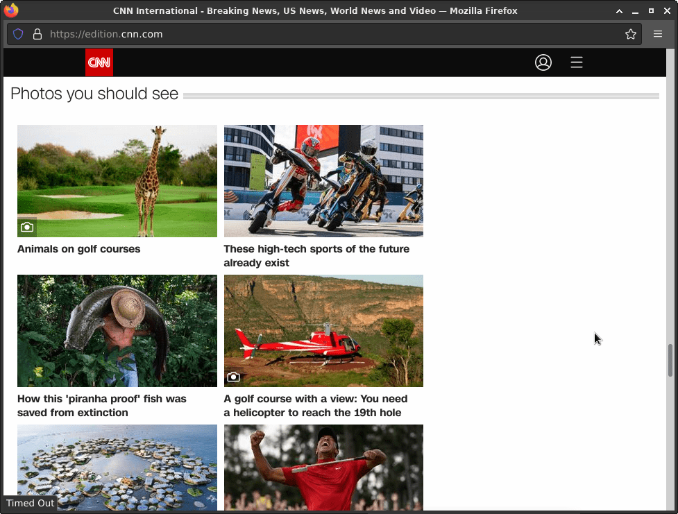

Window.open()
The Window interface's open() method loads
the specified resource into the new or existing browsing context (window,
<iframe> or tab) with the specified name. If the name doesn't exist,
then a new browsing context is opened in a new tab or a new window, and the specified
resource is loaded into it.
Note: For brevity, this document will generally use the term "window" as a shorthand for "a browsing context in a tab or window".
Syntax
var window = window.open(url, windowName, [windowFeatures]);
Parameters
url-
A
DOMStringindicating the URL of the resource to be loaded. This can be a path or URL to an HTML page, image file, or any other resource that is supported by the browser. If the empty string ("") is specified asurl, a blank page is opened into the targeted browsing context. windowNameOptional-
A
DOMStringspecifying the name of the browsing context (window,<iframe>or tab) into which to load the specified resource; if the name doesn't indicate an existing context, a new window is created and is given the name specified bywindowName.This name can be used as the target for the
targetattribute of<a>or<form>elements. The name should not contain whitespace. Keep in mind that this will NOT be used as the window's title. windowFeaturesOptional-
A
DOMStringcontaining a comma-separated list of window features given with their corresponding values in the form name=value — or for boolean features, just name. These features include options such as the window's default size and position, whether or not to open a minimal popup window, and so forth. See Window features below for documentation of each of the features that can be specified.
Return value
A WindowProxy object, which is basically a thin wrapper for the
Window object representing the newly created window, and has all its
features available. If the window couldn't be opened, the returned value is instead
null. The returned reference can be used to access properties and methods
of the new window as long as it complies with Same-origin policy security
requirements.
Description
The open() method creates a new secondary browser window, similar to
choosing New Window from the File menu. The url parameter
specifies the URL to be fetched and loaded in the new window. If
url is an empty string, then a new blank, empty window (URL
about:blank) is created with the default toolbars of the main window.
Note that remote URLs won't load immediately. When window.open() returns,
the window always contains about:blank. The actual fetching of the URL is
deferred and starts after the current script block finishes executing. The window
creation and the loading of the referenced resource are done asynchronously.
Examples
var windowObjectReference;
var windowFeatures = "popup";
function openRequestedPopup() {
windowObjectReference = window.open("http://www.cnn.com/", "CNN_WindowName", windowFeatures);
}
In Firefox on desktop, calling the function above creates a new browser window with a non-editable address bar and without the navigation buttons: 
var windowObjectReference;
function openRequestedPopup() {
windowObjectReference = window.open(
"http://www.domainname.ext/path/ImageFile.png",
"DescriptiveWindowName",
"left=100,top=100,width=320,height=320"
);
}
If a window with the name already exists, then url is loaded
into the existing window. In this case the return value of the method is the
existing window and windowFeatures is ignored. Providing an
empty string for url is a way to get a reference to an open
window by its name without changing the window's location. Otherwise the call to
window.open() will just create a new window.
To open a new window on every call of window.open(), use the
special value _blank for windowName.
Window features
windowFeatures is an optional string containing a
comma-separated list of requested features of the new window. After a window is opened,
JavaScript can't be used to change the features. If windowName
does not specify an existing window and the windowFeatures
parameter is not provided (or if the windowFeatures parameter is
an empty string), then the new secondary window will render the default toolbars of the
main window.
Popup feature
You can specify the windowFeatures parameter to explicitly request that the browser use a popup window with minimal UI parts for the new secondary window.
Whether or not to use a popup window affects the BarProp.visible value.
Note: In some browsers, users can configure the browser to not to use a popup window. Also, some browsers, such as mobile browsers, don't have the concept of windows.
popup-
If this feature is present and enabled, it requests that the browser use a minimal pop-up window for the new secondary window. If this feature is present and disabled, it requests that the browser not use a minimal pop-up window for the secondary window.
To enable the feature, specify popup either with no value at all, or else set it to yes or 1.
Example: popup=yes, popup=1, and popup all have identical results.
Otherwise:
- To not request a popup, omit the windowFeatures parameter.
- Otherwise:
- Specifying any features in the windowFeatures parameter other than
noopenerornoreferrerhas the effect of also requesting a popup. - Otherwise, no popup is requested.
- Specifying any features in the windowFeatures parameter other than
Position and size features
You can use the windowFeatures parameter to control the position and size of the new secondary window,
by specifying feature names using name=value pairs.
If any feature names are given, and the popup feature name is not given, it requests that the browser
use a minimal pop-up window for the secondary window.
Note: In some browsers, users can override this behavior. Also, it has no effect in mobile browsers, which lack the concept of windows.
Note on position and dimension error correction
Position
Warning: If only one of them is specified, the behavior is implementation-dependent, and web author should not rely on it.
leftorscreenX-
Specifies the distance the new window is placed from the left side of the work area for applications of the user's operating system to the leftmost border (resizing handle) of the browser window. The new window cannot be initially positioned offscreen.
toporscreenY-
Specifies the distance the new window is placed from the top side of the work area for applications of the user's operating system to the topmost border (resizing handle) of the browser window. The new window cannot be initially positioned offscreen.
If the windowFeatures parameter is non-empty and if no position
features are defined, then the left and top coordinates of the new window dimension will
be 22 pixels from where the most recently rendered window was. An offset is universally
implemented by browser manufacturers (it is 29 pixels in IE6 SP2 with the default theme)
and its purpose is to help users to notice new windows opening. If the most recently
used window was maximized, then there is no offset: the new window will be maximized as
well.
Size
Warning: If only one of them is specified, the behavior is implementation-dependent, and web author should not rely on it.
widthorinnerWidth-
Specifies the width of the content area, viewing area of the new secondary window in pixels. The width value includes the width of the vertical scrollbar if present. The width value does not include the sidebar if it is expanded. The minimum required value is 100.
heightorinnerHeight-
Specifies the height of the content area, viewing area of the new secondary window in pixels. The height value includes the height of the horizontal scrollbar if present. The height value does not include other UI parts such as location bar, title bar, tab bar, etc. The minimum required value is 100.
If the windowFeatures parameter is non-empty and no size
features are defined, then the new window dimensions will be the same as the dimensions
of the most recently rendered window.
Toolbar and UI parts features
Warning: These features are kept only for backward compatibility. In modern browsers (Firefox 76 or newer, Google Chrome, Safari, Chromium Edge), the following features are just a condition for whether to open a popup or not. See the popup condition section.
The following features control the visibility of each UI part.
To enable them, either specify them with no value at all, or else set them to yes or 1.
To disable them, either omit them, or else set them to no or 0.
menubar-
If this feature is on, then the new secondary window renders the menubar.
If
windowFeaturesis non-empty,menubardefaults to off. toolbar-
If this feature is on, then the new secondary window renders the toolbar buttons (Back, Forward, Reload, Stop buttons).
In addition to the toolbar buttons, Firefox (before 76) will render the Tab Bar if it is visible, present in the parent window. (If this feature is set to off, all toolbars in the window will be invisible).
If
windowFeaturesis non-empty,toolbardefaults to off. location-
If this feature is on, then the new secondary window renders the location bar or the address bar.
If
windowFeaturesis non-empty,locationdefaults to off. status-
If this feature is on, then the new secondary window has a status bar.
If
windowFeaturesis non-empty,statusdefaults to off. resizable-
If this feature is on, the new secondary window will be resizable.
If
windowFeaturesis non-empty,resizabledefaults to on.Note: For accessibility reasons, it is strongly recommended to set this feature always on
scrollbars-
If this feature is on, the new secondary window will show horizontal and/or vertical scrollbar(s) if the document doesn't fit into the window's viewport.
If
windowFeaturesis non-empty,scrollbarsdefaults to off.See note on scrollbars.
Note: For accessibility reasons, it is strongly encouraged to set this feature always on.
Window functionality features
noopener-
If this feature is set, the newly-opened window will open as normal, except that it will not have access back to the originating window (via
Window.opener— it returnsnull). In addition, thewindow.open()call will also returnnull, so the originating window will not have access to the new one either. This is useful for preventing untrusted sites opened viawindow.open()from tampering with the originating window, and vice versa.Note that when
noopeneris used, nonempty target names other than_top,_self, and_parentare all treated like_blankin terms of deciding whether to open a new window/tab.This is supported in modern browsers including Chrome, and Firefox 52+. See
rel="noopener"for more information and for browser compatibility details, including information about ancillary effects. noreferrer-
If this feature is set, the request to load the content located at the specified URL will be loaded with the request's
referrerset tonoreferrer; this prevents the request from sending the URL of the page that initiated the request to the server where the request is sent. In addition, setting this feature also automatically setsnoopener. Seerel="noreferrer"for additional details and compatibility information. Firefox introduced support fornoreferrerin Firefox 68.
Best practices
<script type="text/javascript">
var windowObjectReference = null; // global variable
function openFFPromotionPopup() {
if(windowObjectReference == null || windowObjectReference.closed)
/* if the pointer to the window object in memory does not exist
or if such pointer exists but the window was closed */
{
windowObjectReference = window.open("http://www.spreadfirefox.com/",
"PromoteFirefoxWindowName", "popup");
/* then create it. The new window will be created and
will be brought on top of any other window. */
}
else
{
windowObjectReference.focus();
/* else the window reference must exist and the window
is not closed; therefore, we can bring it back on top of any other
window with the focus() method. There would be no need to re-create
the window or to reload the referenced resource. */
};
}
</script>
(...)
<p><a
href="http://www.spreadfirefox.com/"
target="PromoteFirefoxWindowName"
onclick="openFFPromotionPopup(); return false;"
title="This link will create a new window or will re-use an already opened one"
>Promote Firefox adoption</a></p>
The above code solves a few usability problems related to links opening secondary
window. The purpose of the return false in the code is to cancel default
action of the link: if the onclick event handler is executed, then there is no need to
execute the default action of the link. But if javascript support is disabled or
non-existent on the user's browser, then the onclick event handler is ignored and the
browser loads the referenced resource in the target frame or window that has the name
"PromoteFirefoxWindowName". If no frame nor window has the name
"PromoteFirefoxWindowName", then the browser will create a new window and will name it
"PromoteFirefoxWindowName".
More reading on the use of the target attribute:
HTML 4.01 Target attribute specifications
How do I create a link that opens a new window?
You can also parameterize the function to make it versatile, functional in more situations, therefore re-usable in scripts and webpages:
<script type="text/javascript">
var windowObjectReference = null; // global variable
function openRequestedPopup(url, windowName) {
if(windowObjectReference == null || windowObjectReference.closed) {
windowObjectReference = window.open(url, windowName, "popup");
} else {
windowObjectReference.focus();
};
}
</script>
(...)
<p><a
href="http://www.spreadfirefox.com/"
target="PromoteFirefoxWindow"
onclick="openRequestedPopup(this.href, this.target); return false;"
title="This link will create a new window or will re-use an already opened one"
>Promote Firefox adoption</a></p>
You can also make such function able to open only 1 secondary window and to reuse such single secondary window for other links in this manner:
<script type="text/javascript">
var windowObjectReference = null; // global variable
var PreviousUrl; /* global variable that will store the
url currently in the secondary window */
function openRequestedSinglePopup(url) {
if(windowObjectReference == null || windowObjectReference.closed) {
windowObjectReference = window.open(url, "SingleSecondaryWindowName",
"popup");
} else if(PreviousUrl != url) {
windowObjectReference = window.open(url, "SingleSecondaryWindowName",
"popup");
/* if the resource to load is different,
then we load it in the already opened secondary window and then
we bring such window back on top/in front of its parent window. */
windowObjectReference.focus();
} else {
windowObjectReference.focus();
};
PreviousUrl = url;
/* explanation: we store the current url in order to compare url
in the event of another call of this function. */
}
</script>
(...)
<p><a
href="http://www.spreadfirefox.com/"
target="SingleSecondaryWindowName"
onclick="openRequestedSinglePopup(this.href); return false;"
title="This link will create a new window or will re-use an already opened one"
>Promote Firefox adoption</a></p>
<p><a
href="https://www.mozilla.org/support/firefox/faq"
target="SingleSecondaryWindowName"
onclick="openRequestedSinglePopup(this.href); return false;"
title="This link will create a new window or will re-use an already opened one"
>Firefox FAQ</a></p>
FAQ
- How can I prevent the confirmation message asking the user whether they want to close the window?
-
You cannot. New windows not opened by javascript cannot as a rule be closed by JavaScript. The JavaScript Console in Mozilla-based browsers will report the warning message:
"Scripts may not close windows that were not opened by script."Otherwise the history of URLs visited during the browser session would be lost.More on the
window.close()method. - How can I bring back the window if it is minimized or behind another window?
-
First check for the existence of the window object reference of such window and if it exists and if it has not been closed, then use the focus() method. There is no other reliable way. You can examine an example explaining how to use the focus() method.
- How do I force a maximized window?
-
You cannot. All browser manufacturers try to make the opening of new secondary windows noticed by users and noticeable by users to avoid confusion, to avoid disorienting users.
- How do I turn off window resizability or remove toolbars?
-
You cannot force this. Users with Mozilla-based browsers have absolute control over window functionalities like resizability, scrollability and toolbars presence via user preferences in
about:config. Since your users are the ones who are supposed to use such windows (and not you, being the web author), the best is to avoid interfering with their habits and preferences. We recommend to always set the resizability and scrollbars presence (if needed) to yes to insure accessibility to content and usability of windows. This is in the best interests of both the web author and the users. - How do I resize a window to fit its content?
-
You cannot reliably because the users can prevent the window from being resized by setting
dom.disable_window_move_resizetotrueinabout:configor by editing accordingly their user.js file.In general, users usually disable moving and resizing of existing windows because allowing authors' scripts to do so has been abused overwhelmingly in the past and the rare scripts that do not abuse such feature are often wrong, inaccurate when resizing the window. 99% of all those scripts disable window resizability and disable scrollbars when in fact they should enable both of these features to allow a cautious and sane fallback mechanism if their calculations are wrong.
The window method sizeToContent() can also be disabled. Moving and resizing a window remotely on the user's screen via script will very often annoy the users, will disorient the user, and will be wrong at best. The web author expects to have full control of (and can decide about) every position and size aspects of the users' browser window ... which is not true.
- How do I know whether a window I opened is still open?
-
You can test for the existence of the window object reference which is the returned value in case of success of the window.open() call and then verify that windowObjectReference.closed return value is false.
- How can I tell when my window was blocked by a popup blocker?
-
With the built-in popup blockers, you have to check the return value of
window.open(): it will benullif the window wasn't allowed to open. However, for most other popup blockers, there is no reliable way. - What is the JavaScript relationship between the main window and the secondary window?
-
The
window.open()method gives a main window a reference to a secondary window; the opener property gives a secondary window a reference to its main window. - I cannot access the properties of the new secondary window. I always get an error in the javascript console saying "Error: uncaught exception: Permission denied to get property <property_name or method_name>. Why is that?
-
It is because of the cross-domain script security restriction (also referred as the "Same Origin Policy"). A script loaded in a window (or frame) from a distinct origin (domain name) cannot get nor set properties of another window (or frame) or the properties of any of its HTML objects coming from another distinct origin (domain name). Therefore, before executing a script targeting a secondary window, the browser in the main window will verify that the secondary window has the same domain name.
More reading on the cross-domain script security restriction: http://www.mozilla.org/projects/secu...me-origin.html
Usability issues
Avoid resorting to window.open()
Generally speaking, it is preferable to avoid resorting to window.open()
for several reasons:
- Most modern desktop browsers offer tab-browsing, and tab-capable browser users overall prefer opening new tabs than opening new windows in a majority of webpage situations.
- Most modern browsers offers a popup-blocking feature.
- Users can be using browser-built-in feature or extensions include opening a link in a new window or not, in the same window, in a new tab or not, in "background" or not. Coding carelessly to open new windows can no longer be assured of success, cannot succeed by force and, if it does, it will annoy a majority of users.
- New windows can have menubar missing, scrollbars missing, status bar missing, window resizability disabled, etc.; new tabs cannot be missing those functionalities or toolbars (or at least, the toolbars that are present by default). Therefore, tab-browsing is preferred by a lot of users because the normal user-interface of the browser window they prefer is kept intact, remains stable.
- Opening new windows, even with reduced features, uses considerably a lot of the user's system resources (cpu, RAM) and involves considerably a lot of coding in the source code (security management, memory management, various code branchings sometimes quite complex, window frame/chrome/toolbars building, window positioning and sizing, etc.). Opening new tabs is less demanding on the user's system resources (and faster to achieve) than opening new windows.
Offer to open a link in a new window, using these guidelines
If you want to offer to open a link in a new window, then follow tested and recommendable usability and accessibility guidelines:
Never use this form of code for links: <a href="javascript:window.open(...)" ...>
"javascript:" links break accessibility and usability of webpages in every browser.
- "javascript:" pseudo-links become dysfunctional when javascript support is disabled or inexistent. Several corporations allow their employees to surf on the web but under strict security policies: no javascript enabled, no java, no activeX, no Flash. For various reasons (security, public access, text browsers, etc..), about 5% to 10% of users on the web surf with javascript disabled.
- "javascript:" links will interfere with advanced features in tab-capable browsers: eg. middle-click on links, Ctrl+click on links, tab-browsing features in extensions, etc.
- "javascript:" links will interfere with the process of indexing webpages by search engines.
- "javascript:" links interfere with assistive technologies (e.g. voice browsers) and several web-aware applications (e.g. PDAs and mobile browsers).
- "javascript:" links also interfere with "mouse gestures" features implemented in browsers.
- Protocol scheme "javascript:" will be reported as an error by link validators and link checkers.
Further reading:
- Top Ten Web-Design Mistakes of 2002, 6. JavaScript in Links, Jakob Nielsen, December 2002
- Links & JavaScript Living Together in Harmony, Jeff Howden, February 2002
- comp.lang.javascript newsgroup discussion FAQ on "javascript:" links
Never use <a href="#" onclick="window.open(...);">
Such pseudo-link also breaks accessibility of links. Always use a real URL for the href attribute value so that if javascript support is disabled or inexistent or if the user agent does not support opening of secondary window (like MS-Web TV, text browsers, etc), then such user agents will still be able to load the referenced resource according to its default mode of opening/handling a referenced resource. This form of code also interferes with advanced features in tab-capable browsers: eg. middle-click on links, Ctrl+click on links, Ctrl+Enter on links, "mouse gestures" features.
Always identify links that will create (or will re-use) a new, secondary window
Identify links that will open new windows in a way that helps navigation for users by coding the title attribute of the link, by adding an icon at the end of the link or by coding the cursor accordingly.
The purpose is to warn users in advance of context changes to minimize confusion on the user's part: changing the current window or popping up new windows can be very disorienting to users (Back toolbar button is disabled).
"Users often don't notice that a new window has opened, especially if they are using a small monitor where the windows are maximized to fill up the screen. So a user who tries to return to the origin will be confused by a grayed out Back button." quote from The Top Ten New Mistakes of Web Design: 2. Opening New Browser Windows, Jakob Nielsen, May 1999
When extreme changes in context are explicitly identified before they occur, then the users can determine if they wish to proceed or so they can be prepared for the change: not only they will not be confused or feel disoriented, but more experienced users can better decide how to open such links (in a new window or not, in the same window, in a new tab or not, in "background" or not).
References
- "If your link spawns a new window, or causes another windows to 'pop up' on your display, or move the focus of the system to a new FRAME or Window, then the nice thing to do is to tell the user that something like that will happen." World Wide Web Consortium Accessibility Initiative regarding popups
- "Use link titles to provide users with a preview of where each link will take them, before they have clicked on it." Ten Good Deeds in Web Design, Jakob Nielsen, October 1999
- Using Link Titles to Help Users Predict Where They Are Going, Jakob Nielsen, January 1998
Always use the target attribute
If javascript support is disabled or non-existent, then the user agent will create a secondary window accordingly or will render the referenced resource according to its handling of the target attribute: e.g. some user agents that cannot create new windows, like MS Web TV, will fetch the referenced resource and append it at the end of the current document. The goal and the idea is to try to provide - not impose - to the user a way to open the referenced resource, a mode of opening the link. Your code should not interfere with the features of the browser at the disposal of the user and your code should not interfere with the final decision resting with the user.
Do not use target="_blank"
Always provide a meaningful name to your target attribute and try to reuse such target attribute in your page so that a click on another link may load the referenced resource in an already created and rendered window (therefore speeding up the process for the user) and therefore justifying the reason (and user system resources, time spent) for creating a secondary window in the first place. Using a single target attribute value and reusing it in links is much more user resources friendly as it only creates one single secondary window, which is recycled. On the other hand, using "_blank" as the target attribute value will create several new and unnamed windows on the user's desktop that cannot be recycled, reused. In any case, if your code is well done, it should not interfere with the user's final choice but rather merely offer them more choices, more ways to open links and more power to the tool they are using (a browser).
Glossary
- Opener window, parent window, main window, first window
-
Terms often used to describe or to identify the same window. It is the window from which a new window will be created. It is the window on which the user clicked a link that leads to the creation of another, new window.
- Sub-window, child window, secondary window, second window
-
Terms often used to describe or to identify the same window. It is the new window that was created.
- Unrequested popup windows
-
Script-initiated windows opening automatically without the user's consent.
Specifications
| Specification |
|---|
| HTML Standard (HTML) # dom-open-dev |
| CSSOM View Module (CSSOM View) # the-features-argument-to-the-open()-method |
Browser compatibility
| desktop | mobile | |||||||||||
|---|---|---|---|---|---|---|---|---|---|---|---|---|
open | ChromeFull support1 | EdgeFull support12 | FirefoxFull support1 | Internet ExplorerFull support4 | OperaFull support3 | SafariFull support1 | WebView AndroidFull support1 | Chrome AndroidFull support18 | Firefox for AndroidFull support4 | Opera AndroidFull support10.1 | Safari on iOSFull support1 | Samsung InternetFull support1.0 |
features parameter accepts "popup" value | ChromeFull support98 | EdgeFull support98 | FirefoxFull support96 | Internet ExplorerNo supportNo | OperaNo supportNo | SafariNo supportNo | WebView AndroidFull support98 | Chrome AndroidFull support98 | Firefox for AndroidFull support96 | Opera AndroidNo supportNo | Safari on iOSNo supportNo | Samsung InternetNo supportNo |
One Window.open() call per event | ChromeFull support23 | EdgeFull support12 | FirefoxFull support65 | Internet ExplorerFull support4 | OperaFull support12.1 | SafariNo supportNo | WebView AndroidFull support37 | Chrome AndroidFull support25 | Firefox for AndroidFull support65 | Opera AndroidFull support12.1 | Safari on iOSNo supportNo | Samsung InternetFull support1.5 |
outerHeight and outerWidth features | ChromeNo supportNo | EdgeNo supportNo | FirefoxNo support1 – 80 | Internet ExplorerNo supportNo | OperaNo supportNo | SafariNo supportNo | WebView AndroidNo supportNo | Chrome AndroidNo supportNo | Firefox for AndroidFull support4 | Opera AndroidNo supportNo | Safari on iOSNo supportNo | Samsung InternetNo supportNo |
Notes
Popup condition
Most modern browsers (listed below) don't allow web content to control the visibility of UI parts separately.
- Firefox 76 or newer
- Google Chrome
- Safari
- Chromium Edge
UI-related items of windowFeatures are used as a condition to
whether opening a popup or a new tab, or a new window, and UI parts visibility of each
of them is fixed.
The condition is described in detail in the "To check if a popup window is requested" section in the spec.
Note on scrollbars
When content overflows window viewport dimensions, then scrollbar(s) (or some scrolling mechanism) are necessary to ensure that content can be accessed by users. Content can overflow window dimensions for several reasons that are outside the control of web authors:
- user resizes the window
- user increases the text size of fonts via View/Text Zoom (%) menuitem in Mozilla or View/Text Size/Increase or Decrease in Firefox
- user sets a minimum font size for pages that is bigger than the font-size the web author requested. People over 40 years old or with particular viewing habit or reading preference often set a minimal font size in Mozilla-based browsers.
- web author is not aware of default margin (and/or border and/or padding) values applying to root element or body node in various browsers and various browser versions
- user uses an user stylesheet (userContent.css in Mozilla-based browsers) for his viewing habits that increases document box dimensions (margin, padding, default font size)
- user can customize individually the size (height or width) of most toolbars via operating system settings. E.g. window resizing borders, height of browser titlebar, menubar, scrollbars, font size are entirely customizable by the user in Windows XP operating system. These toolbars dimensions can also be set via browser themes and skins or by operating system themes
- web author is unaware that the user default browser window has custom toolbar(s) for specific purpose(s); e.g.: prefs bar, web developer bar, accessibility toolbar, popup blocking and search toolbar, multi-feature toolbar, etc.
- user uses assistive technologies or add-on features that modify the operating system's work area for applications: e.g. MS-Magnifier
- user repositions and/or resizes directly or indirectly the operating system's work area for applications: e.g. user resizes the Windows taskbar, user positions the Windows taskbar on the left side (arabic language based) or right side (Hebrew language), user has a permanent MS-Office quick launch toolbar, etc.
- some operating system (Mac OS X) forces presence of toolbars that can then fool the web author's anticipations, calculations of the effective dimensions of the browser window
Note on position and dimension error correction
Requested position and requested dimension values in the features list will not be honored and will be corrected if any of such requested value does not allow the entire browser window to be rendered within the work area for applications of the user's operating system. No part of the new window can be initially positioned offscreen. This is by default in all Mozilla-based browser releases.
MSIE 6 SP2 has a similar error correction mechanism but it is not activated by default in all security levels: a security setting can disable such error correction mechanism.
Tutorials
- JavaScript windows (tutorial) by Lasse Reichstein Nielsen
- The perfect pop-up (tutorial) by Ian Lloyd
- Popup windows and Firefox (interactive demos) by Gérard Talbot
References
- Links Want To Be Links by Jukka K. Korpela
- Links & JavaScript Living Together in Harmony by Jeff Howden